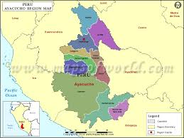
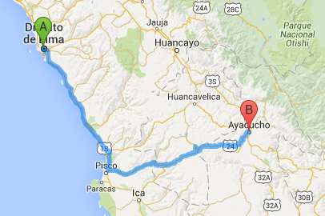

Ayacucho
Ayacucho Tierra de artesanos que mantienen viva la tradición alfarera de los antiguos Wari en codiciados retablos, y un rosario de iglesias y casonas de marcada arquitectura colonial con invalorables lienzos y altares trazan el contorno de esta tierra de momentos y lugares históricos, como la Pampa de Ayacucho, donde se selló la independencia continental. Huamanga, llamada Ayacucho por Simón Bolívar, es un santuario que merece recorrerse pueblo por pueblo, con pasión y sin temor a descubrir el peculiar placer por la nostálgica música ayacuchana.
¿Cómo llegar?
 Ayacucho se ubica al sudeste de Lima. Zona típicamente serrana al Este de la Cordillera Occidental; el paisaje ayacuchano combina hermosos valles y desoladas pampas. La capital del departamento es la ciudad de Ayacucho (aunque los pobladores ayacuchanos la siguen nombrando como originalmente se la llamó: Huamanga). Posee un clima templado, seco y saludable - variando este de acuerdo a la estación - con una temperatura promedio de 17.5 °C. Otra de las características en cuanto al clima ayacuchano, es que entre los meses de noviembre a marzo, se presentan eventualmente lluvias intensas.
